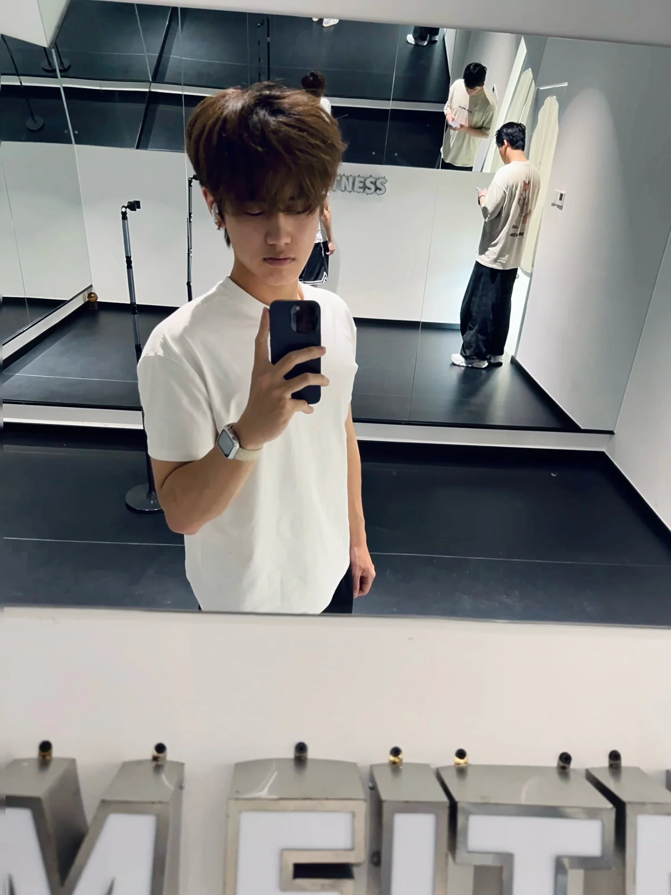

Introduction
One workout became another. Days became weeks, and weeks became months. Dumbbells went up and down again and again, and the weight on the bar gradually increased.
Reflection
Almost a year of consistent training has changed my appearance, my physique, and the way I carry myself. Much of that work happened when nobody was watching.
Later, I met the same person who had once called me overweight. The first thing they said was: ‘Wow. How did you get so strong?’ I remember how good that felt.
- Show up again
- Let small changes accumulate
- Keep moving forward
Their reaction did not create the change. It reminded me that all those quiet hours of training had left a mark.